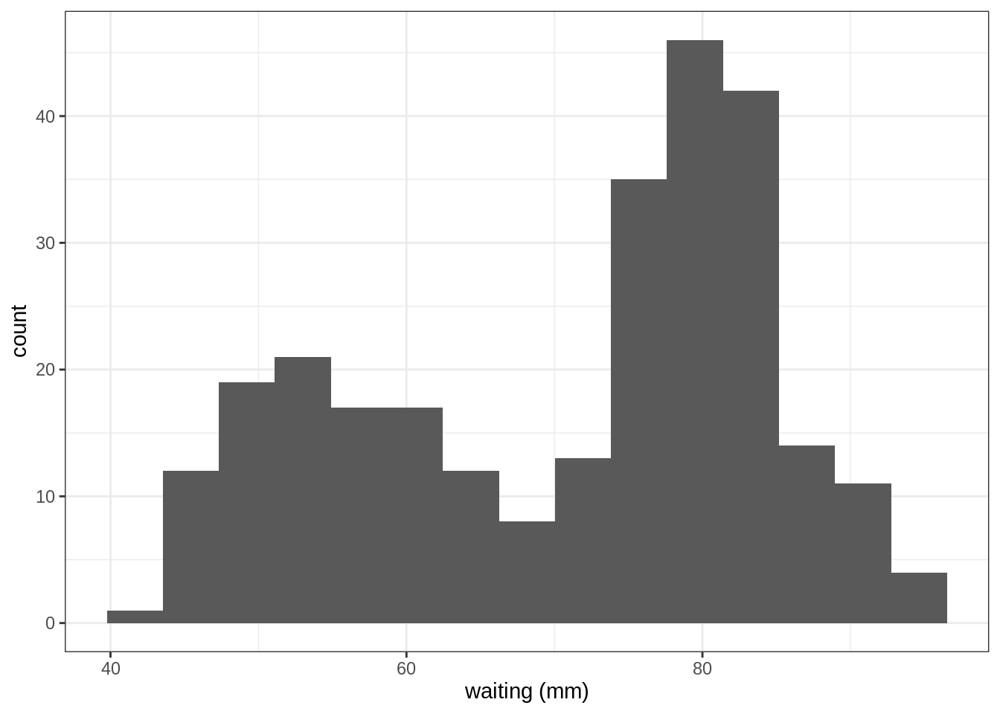
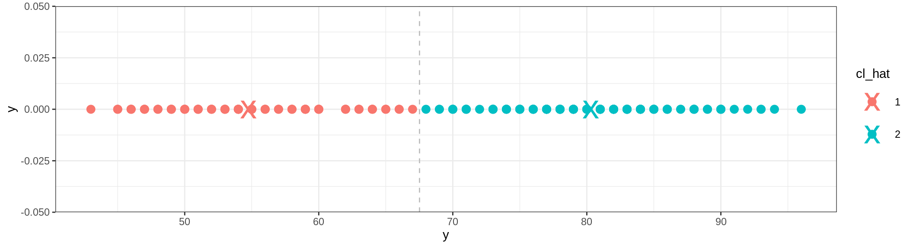
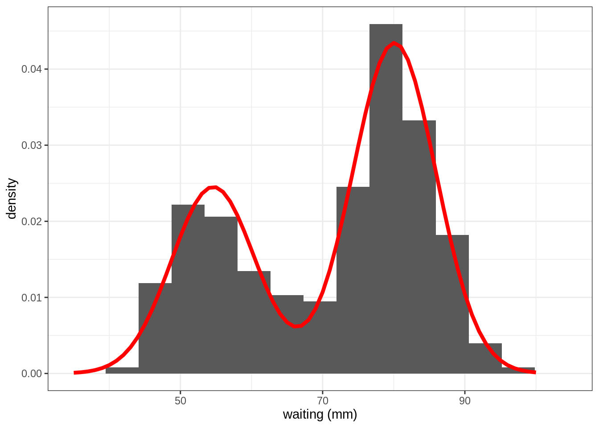
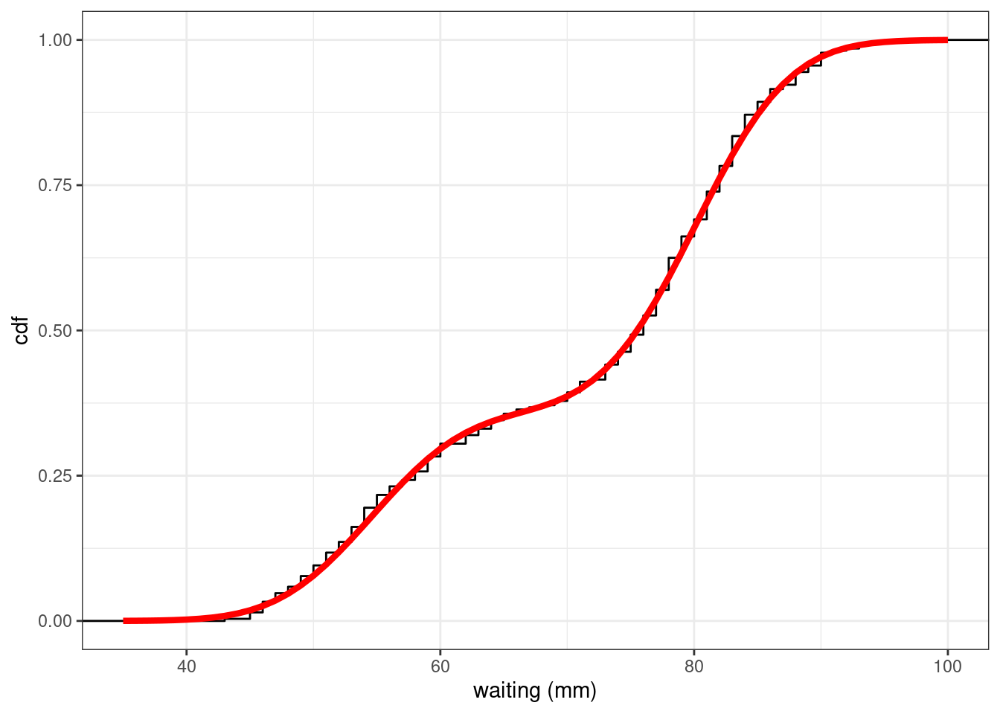
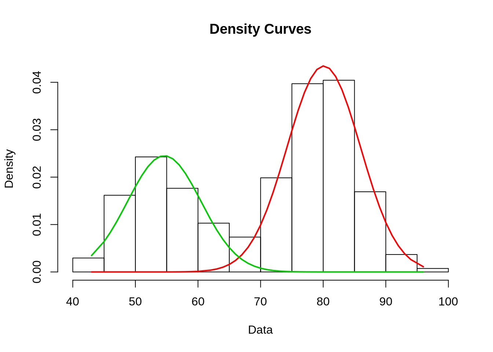
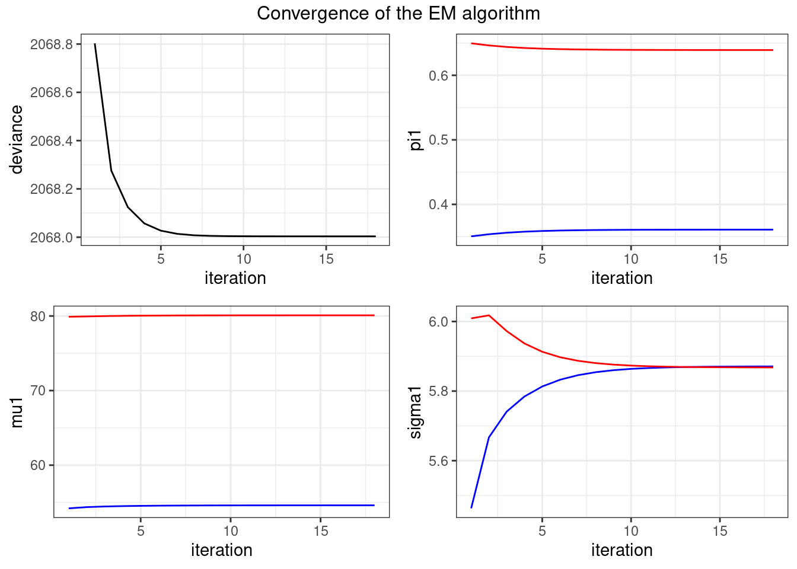
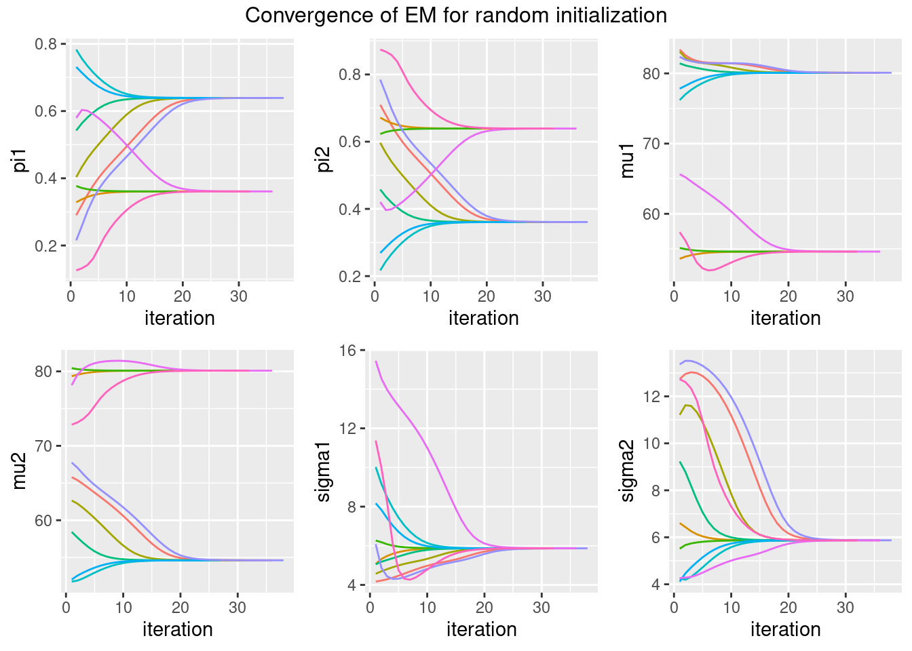

library(tidyverse)
library(gridExtra)
library(aricode)
library(mixtools)
theme_set(theme_bw())Mixture Models
Lecture Notes
Preliminary
Functions from R-base and stats (preloaded) are required plus packages from the tidyverse for data representation and manipulation. We will also use the package mixtools, which implements EM for simple mixture models to check our own implementation, and the package aricode for computing various metrics and for comparing clustering:
1 The faithful data
1.1 The data
The faithful data consists of the waiting time between eruptions and the duration of the eruption for the Old Faithful geyser in Yellowstone National Park, Wyoming, USA.
data("faithful")
faithful %>% rmarkdown::paged_table()For convenience, in the following, the data vector will be denoted by y, with n entries:
y <- faithful$waiting
n <- length(y)We will consider the waiting time in the following. Let us display the empirical distribution of this variable (an histogram).
faithful %>% ggplot() +
geom_histogram(aes(x = waiting), bins = 15) + xlab("waiting (mm)")
We clearly see 2 modes: the waiting times seem to be distributed either around 50mn or around 80mn.
1.2 k-means clustering
Imagine that we want to partition the data (y_i , 1 \leq i \leq n) into K clusters. Let \mu_1, \mu_2, \mu_K be the K centers of these K clusters. A way to decide to which cluster belongs an observation y_i consists in minimizing the distance between y_i and the centers (\mu_k).
Let Z_i be a label variable such that Z_i=k if observation i belongs to cluster k. Then,
Z_i = {\rm arg}\min_{ k \in \{1,2, \ldots,K\}} (y_i-\mu_k)^2
The centers (\mu_k) can be estimated by minimizing the within-cluster sum of squares
\begin{aligned} U(\mu_1,\mu_2,\ldots,\mu_L) & =\sum_{i=1}^n \min_{k \in \{1, \ldots, K\}} (y_i - \mu_k)^2 \\ &= \sum_{i=1}^n (y_i - \mu_{Z_i})^2 \\ &= \sum_{i=1}^n \sum_{k=1}^K (y_i - \mu_k)^2 \mathbf{1}_{\{{z}_i=k\}} \end{aligned}
For k=1,2,\ldots, K, the solution \hat\mu_k is the empirical mean computed in cluster k. Let n_k = \sum_{i=1}^n \mathbf{1}_{\{{z}_i=k\}} be the number of observation belonging to cluster k. Then
\hat{\mu}_k = \frac{1}{n_k} \sum_{i=1}^n y_i \mathbf{1}_{\{z_i=k\}}
Let us compute the centers of the two clusters for our faithful data:
U <- function(mu, y) {
sum(pmin((y-mu[1])^2, (y-mu[2])^2))
}
mu_hat <- nlm(U, c(50,80), y)$estimate
mu_hat[1] 54.74997 80.28484We can then classify the n observations into these 2 clusters
cl_hat <- rep(1, n)
in_cl2 <- which ((y-mu_hat[1])^2 > (y-mu_hat[2])^2 )
cl_hat[in_cl2] <- 2
clustered_data <- data.frame(y, cl_hat = factor(cl_hat))and plot them on the original data
Show the code
ggplot() +
geom_point(data = clustered_data, aes(x = y, y = 0, colour = cl_hat), size=3) +
geom_point(data = data.frame(y = mu_hat, group = factor(c(1,2))), aes(y, 0, colour = group), size=10, shape="x") +
geom_vline(xintercept = mean(mu_hat), linetype = "dashed", color = "gray")
and compute the sizes, the empirical means and standard deviations for each cluster:
clustered_data %>%
group_by(cl_hat) %>%
summarise(count = n(), means = mean(y), stdev = sd(y))# A tibble: 2 x 4
cl_hat count means stdev
<fct> <int> <dbl> <dbl>
1 1 100 54.8 5.90
2 2 172 80.3 5.631.3 Mixture of probability distributions
In a probability framework,
- the labels Z_1, \ldots, Z_n are a sequence of random variables that take their values in \{1, 2, \cdots, K \} and such that, for k=1,2,\ldots K,
\mathbb{P}(Z_i = k) = \pi_k, \qquad \text{s.t } \sum_{k=1}^K \pi_k = 1
- the observations in group k, i.e. such Z_i=k, are independent and follow a same probability distribution f_k,
Y_i | Z_i=k \sim^{\text{iid}} f_k
The probability distribution of Y_i = y_i is therefore a mixture of K distributions:
\begin{aligned} \mathbb{P}(Y_i = y_i) &= \sum_{k=1}^K \mathbb{P}(Y_i , Z_i = k) \\ & = \sum_{k=1}^K \mathbb{P}(Z_i = k) \, \mathbb{P}(Y_i | Z_i = k) \\ & = \sum_{k=1}^K \pi_k \, f_k(y_i) \end{aligned}
If, for each k, f_k is a normal distribution with mean \mu_k and variance \sigma^2_k, the model is a Gaussian mixture model:
Y_i \sim^{\text{iid}} \sum_{k=1}^K \pi_k \, \mathcal{N}(\mu_k \ , \ \sigma^2_k) The vector of parameters of the model regroups the paramateers of each component of the mixture, that is,
\theta = (\boldsymbol{\pi} = (\pi_1, \ldots, \pi_K), \boldsymbol\mu = (\mu_1,\ldots, \mu_K), \boldsymbol\sigma^2 = (\sigma^2_1,\ldots,\sigma^2_K) )
and the likelihood function is
\begin{aligned} \ell(\theta, \boldsymbol y) &= \prod_{i=1}^n \mathbb{P}(y_i ; \theta) \\ &= \prod_{i=1}^n \left( \sum_{k=1}^K \mathbb{P}(_i=k ; \theta)\mathbb{P}(y_i | Z_i=k ;\theta) \right) \\ &= \prod_{i=1}^n \left( \sum_{k=1}^K \frac{\pi_k}{\sqrt{2\pi \sigma^2_k}} \ \exp \left\{-\frac{1}{2\sigma_k^2}(y_i - \mu_k)^2 \right\} \right) \end{aligned}
We can define functions to compute the density and probability distribution for our mixture as a function of the vector of parameters \theta:
dmixture <- function(x, theta) {
mapply(
function(pik, muk, sigmak) pik * dnorm(x, muk, sigmak),
theta$pi, theta$mu, theta$sigma,
SIMPLIFY = TRUE
) %>% rowSums()
}
pmixture <- function(x, theta) {
mapply(
function(pik, muk, sigmak) pik * pnorm(x, muk, sigmak),
theta$pi, theta$mu, theta$sigma,
SIMPLIFY = TRUE
) %>% rowSums()
}
theta <- list(pi = c(.25,.75), mu = c(52,82), sigma = c(10,10))
head(dmixture(y, theta))[1] 0.02886461 0.01036973 0.02261373 0.01009859 0.02864715 0.01031627head(pmixture(y, theta))[1] 0.5356997 0.1467313 0.4054157 0.2273988 0.7133127 0.1570781The maximum likelihood (ML) estimate of \theta cannot be computed in a closed form but several methods can be used for maximizing this likelihood function.
For instance, a Newton-type algorithm can be used for minimizing the deviance -2\log(\ell(\theta , y)).
## trick: nlm diverge if two parameters are used for pi, so force the summation to 1
objective <- function(theta, y) {
theta_l <- list(pi = c(theta[1], 1 - theta[1]), mu = theta[2:3], sigma = theta[4:5])
deviance <- -2*sum(log(dmixture(y, theta_l)))
deviance
}
theta0 <- c(.25,52,82,10,10)
param <- nlm(objective, theta0, y)$estimate
theta_hat <- list(pi = c(param[1], 1-param[1]), mu = param[2:3], sigma = param[4:5])
theta_hat$pi
[1] 0.3608861 0.6391139
$mu
[1] 54.61486 80.09107
$sigma
[1] 5.871218 5.867734We can then plot the empirical distribution of the data together with the probability density function of the mixture:
Show the code
plot_mixture <- data.frame(x = 35:100)
plot_mixture$pdf <- dmixture(plot_mixture$x, theta_hat)
faithful %>% ggplot() +
geom_histogram(aes(x = waiting, y=..density..), bins = 15) + xlab("waiting (mm)") +
geom_line(data = plot_mixture, aes(x, pdf),colour="red",size=1.5)
Comparing the empirical and theoretical cumulative distribution functions (cdf) shows how well the mixture model fits the data
Show the code
plot_mixture$cdf <- pmixture(plot_mixture$x, theta_hat)
faithful %>% ggplot() +
stat_ecdf(aes(waiting), geom = "step") + xlab("waiting (mm)") +
geom_line(data = plot_mixture, aes(x, cdf),colour="red",size=1.5) + ylab("cdf")
The estimated mixture distribution F_{\hat{\theta}} (obtained with the maximum likelihood estimate \hat\theta) seems to perfectly fit the empirical distribution of the faithful data.
We can perform a Kolmogorov-Smirnov test for testing H_0: y_i \sim \ F_{\hat{\theta}} versus H_1: y_i \sim \!\!\!\!\!/ \ F_{\hat{\theta}}:
ks.test(y, pmixture, theta_hat)
One-sample Kolmogorov-Smirnov test
data: y
D = 0.033545, p-value = 0.9195
alternative hypothesis: two-sidedWe can compute the posterior distribution of the label variables:
\begin{aligned} \mathbb{P}(Z_i=k \ | \ y_i \ ; \ \hat{\theta}) &= \frac{\mathbb{P}(Z_i=k \ ; \ \hat{\theta})\mathbb{P}(y_i \ | \ Z_i=k \ ; \ \hat{\theta})}{\mathbb{P}(y_i \ ; \ \hat{\theta})} \\ &= \frac{\mathbb{P}(Z_i=k \ ; \ \hat{\theta})\mathbb{P}(y_i \ | \ Z_i=k \ ; \ \hat{\theta})} {\sum_{j=1}^K\mathbb{P}(Z_i=j \ ; \ \hat{\theta})\mathbb{P}(y_i \ | \ Z_i=j \ ; \ \hat{\theta})} \\ &= \frac{\frac{\hat\pi_k}{\sqrt{2\pi \hat\sigma_k^2}} \exp \left\{-\frac{1}{2\hat\sigma_k^2}(y_i - \hat\mu_k)^2 \right\}} {\sum_{j=1}^K\frac{\hat\pi_j}{\sqrt{2\pi \hat\sigma_j^2}} \exp \left\{-\frac{1}{2\hat\sigma_j^2}(y_i - \hat\mu_j)^2 \right\}} \end{aligned}
dcomponents <- function(theta, x) {
mapply(
function(pik, muk, sigmak) pik * dnorm(x, muk, sigmak),
theta$pi, theta$mu, theta$sigma,
SIMPLIFY = TRUE
)
}
tau <- dcomponents(theta_hat, y)
tau %>% as.data.frame() %>% setNames(c("comp.1", "comp.2")) %>%
add_column(y = y) %>% rmarkdown::paged_table()The Expectation - Maximization (EM) algorithm (implemented in the mixtools library for instance) could also be used for computing the ML estimate of \theta. Both algorithms provide the same results.
mixture_EM <- normalmixEM(y)number of iterations= 25 list(pi = mixture_EM$lambda, mu=mixture_EM$mu,sigma=mixture_EM$sigma)$pi
[1] 0.3608851 0.6391149
$mu
[1] 54.61482 80.09104
$sigma
[1] 5.871192 5.867755plot(mixture_EM, which=2)
mixture_EM$posterior %>% as_tibble() %>% rmarkdown::paged_table()1.4 Mixture model versus clustering
Let us sample some data from a Gaussian mixture model. Of course, the labels of the simulated data are known.
n1 <- 120; n2 <- 80
some_data <- data.frame(
y = c(rnorm(n1, 0, 1), rnorm(n2, 3, 1)),
z = rep(1:2, c(n1,n2))
)We can use the k-means method to create two clusters and compute the proportion, center and standard deviation for each cluster,
kmeans_out <- kmeans(some_data$y, centers = 2)
list(pi = kmeans_out$size/sum(kmeans_out$size),
mu = as.vector(kmeans_out$centers),
sigma = sqrt(kmeans_out$withinss/kmeans_out$size))$pi
[1] 0.385 0.615
$mu
[1] 3.07179393 -0.05654131
$sigma
[1] 0.9714052 0.8698906We can instead consider a Gaussian mixture model, use the EM algorithm with the same data and display the estimated parameters
gmm_out = normalmixEM(some_data$y)number of iterations= 109 list(pi = gmm_out$lambda,
mu = gmm_out$mu,
sigma = gmm_out$sigma)$pi
[1] 0.604725 0.395275
$mu
[1] -0.02173197 2.93721226
$sigma
[1] 0.948718 1.134503Since the “true” labels are known, we can compute the classification error rate for each method (in % here):
cl_kmeans <- kmeans_out$cluster
cl_gmm <- apply(gmm_out$posterior, 1, which.max)
accuracy <- c(mean(some_data$z != cl_kmeans)*100, mean(some_data$z != cl_gmm)*100)
accuracy[1] 94.5 5.5In this case, the two clusterings are very close:
aricode::ARI(cl_kmeans, some_data$z)[1] 0.7907009aricode::ARI(cl_gmm , some_data$z)[1] 0.7907009aricode::ARI(cl_kmeans, cl_gmm)[1] 1Of course, these results depend strongly on the model, i.e. on the parameters of the mixture. This Shiny app allows one to modify the parameters of the second distribution (the first distribution is assumed to be a normal distribution with mean 0 and variance 1) and compare the results provided by the two methods.
2 Some EM-type algorithms
2.1 Maximisation of the complete likelihood
Assume first that the label (Z_i) are known. Estimation of the parameters of the model is straightforward: for k =1,2, \ldots, K,
\begin{aligned} \hat{\pi}_k &= \frac{\sum_{i=1}^n \mathbf{1}_{Z_i=k}}{n} \\ \hat{\mu}_k &= \frac{\sum_{i=1}^n y_i\mathbf{1}_{Z_i=k}}{\sum_{i=1}^n \mathbf{1}_{Z_i=k}} \\ \hat{\sigma}_k^2 &= \frac{\sum_{i=1}^n y_i^2\mathbf{1}_{Z_i=k}}{\sum_{i=1}^n \mathbf{1}_{Z_i=k}} - \hat{\mu}_k^2\\ \end{aligned}
Then, we see that S(z,y) = (\sum_{i=1}^n \mathbf{1}_{Z_i=k} \ , \ \sum_{i=1}^n y_i\mathbf{1}_{Z_i=k}\ , \ \sum_{i=1}^n y_i^2\mathbf{1}_{Z_i=k} \ ; \ 1 \leq k \leq K) is the sufficient statistics of the complete model. Indeed, the maximum likelihood estimate of \theta is a function of S(z,y):
\hat{\theta} = ( \hat{\boldsymbol\pi} = (\hat{\pi}_1,\ldots,\hat{\pi}_K), \hat{\boldsymbol\mu}=(\hat{\mu}_1,\ldots,\hat{\mu}_K), \hat{\boldsymbol\sigma} = (\hat{\sigma}_1, \ldots,\hat{\sigma}_K) ) = \hat\Theta(S(Z,Y))
where \hat\Theta is the function defining the maximum likelihood estimator of \theta.
2.2 The EM algorithm
When the labels (Z_i) are unknown, the sufficient statistics S(Z,Y) cannot be computed. Then, the idea of EM is to replace S(Z,Y) by its conditional expectation \mathbb{E}[S(Z,Y)| Y ;\theta], wrt the posterior distribution of Z|Y; \theta.
The problem is that this conditional expectation depends on the unknown parameter \theta. EM is therefore an iterative procedure, where, at iteration t:
- the E-step computes S^{(t)}(Y) = \mathbb{E}\left(S(Z,Y)|Y ;\theta^{(t-1)}\right)
- the M-step updates the parameter estimate:
\theta^{(t)} = \hat\Theta(S^{(t)}(Y))
Let us see now how to compute \mathbb{E}\left(S(Z,Y) | Y ;\theta^{(t-1)}\right).
First, for any 1\leq i \leq n, and any 1 \leq k \leq K, let
\tau^{(t)}_{ik} = \mathbb{E}\left(\mathbf{1}_{\{Z_i=k\}} \ | \ y_i \ ; \ \theta^{(t-1)}\right)
By definition,
\begin{aligned} \tau^{(t)}_{ik} &= \mathbb{E}\left(\mathbf{1}_{\{Z_i=k\}} \ | \ Y_i \ ; \ \theta^{(t-1)}\right) \\ &= \mathbb{P}(Z_i=k \ | \ Y_i \ ; \ \theta^{(t-1)}) \\ &= \frac{\mathbb{P}(Z_i=k\ ; \ \theta^{(t-1)})\mathbb{P}(Y_i \ | \ Z_i=k \ ; \ \theta^{(t-1)})}{\mathbb{P}(Y_i \ ; \ \theta^{(t-1)})} \\ &= \frac{\mathbb{P}(Z_i=k\ ; \ \theta^{(t-1)}) f_k(Y_i \ ; \ \theta^{(t-1)})} {\sum_{\ell=1}^K \mathbb{P}(Z_i=\ell\ ; \ \theta^{(t-1)}) f_\ell(y_i \ ; \ \theta^{(t-1)})} \\ &= \frac{\pi^{(t-1)}_k f_k(y_i \ ; \ \theta^{(t-1)})} {\sum_{\ell=1}^K \pi_\ell^{(t-1)} f_\ell(y_i \ ; \ \theta^{(t-1)})} \end{aligned}
where \pi^{(t-1)}_{k}=\mathbb{P}\left(Z_i=k\ ; \ \theta^{(t-1)}\right) is the estimate of \pi_k obtained at iteration (t-1) and where
f_k(y_i \ ; \ \theta^{(t-1)}) = \frac{1}{\sigma^{(t-1)}_{k}\sqrt{2\pi}} \exp\left\{ -\frac{1}{2\left(\sigma_k^2\right)^{(t-1)}}\left(y_i - \mu^{(t-1)}_{k}\right)^2 \right\}
is the probability density function of Y_i when Z_i=k, computed at iteration k-1 using \theta^{(t-1)}. The expected values of the other sufficient statistics can now easily be computed. Indeed, for i=1,2,\ldots,n and k = 1,2,\ldots,K,
\begin{aligned} \mathbb{E}[Y_i\mathbf{1}_{Z_i=k} \ | \ Y_i = y_i \ ; \ \theta^{(t-1)}] & = y_i\tau^{(t)}_{ik} \\ \mathbb{E}[Y_i^2\mathbf{1}_{Z_i=k} \ | \ Y_i = y_i \ ; \ \theta^{(t-1)}] & = y_i^2\tau^{(t)}_{ik} \end{aligned}
Then, the t-th iteration of the EM algorithm for a Gaussian mixture consists in
- computing \tau^{(t)}_{ik} for i=1,2,\ldots,n and k = 1,2,\ldots,L, using \theta^{(t-1)},
- computing \theta_{k}= \left(\pi^{(t)}_k,\mu^{(t)}_k,\sigma^{(t)}_k ; 1 \leq k \leq K\right) where
\begin{aligned} \pi^{(t)}_k &= \frac1n \sum_{i=1}^n \tau^{(t)}_{ik} \\ \mu^{(t)}_k &= \frac{\sum_{i=1}^n y_i\tau^{(t)}_{ik}}{\sum_{i=1}^n \tau^{(t)}_{ik}} \\ \sigma^{(t)}_k & = \frac{\sum_{i=1}^n y_i^2 \tau^{(t)}_{ik}}{\sum_{i=1}^n \tau^{(t)}_{ik}} - \left(\mu^{(t)}_k\right)^2 \\ \end{aligned}
For a given set of initial values \theta^{(0)} = (\boldsymbol\pi^{(0)},\boldsymbol\mu^{(0)},\boldsymbol\sigma^{(0)}), the following function returns the EM estimate \theta_K, the sequence of estimates (\theta^{(t)} \ , \ 0\leq t \leq T) and the deviance computed with the final estimate -2\log \ell(\boldsymbol y \ ; \ \theta^T). The algorithm stops when the change in the deviance between two iteration is less than a given threshold.
mixture_gaussian1D <- function(x, theta0, max_iter = 100, threshold = 1e-6) {
## initialization
n <- length(x)
deviance <- numeric(max_iter) # we save the results
theta <- vector("list", max_iter) # for monitoring
likelihoods <- dcomponents(theta0, x)
deviance[1] <- -2 * sum(log(rowSums(likelihoods)))
theta[[1]] <- theta0
for (t in 1:max_iter) {
# E step
tau <- likelihoods / rowSums(likelihoods)
# M step
pi <- colMeans(tau)
mu <- colSums(tau * x) / colSums(tau)
sigma <- sqrt(colSums(tau * x^2) / colSums(tau) - mu^2)
theta[[t + 1]] <- list(pi = pi, mu = mu, sigma = sigma)
## Assessing convergence
likelihoods <- dcomponents(theta[[t + 1]], x)
deviance[t+1] <- - 2 * sum(log(rowSums(likelihoods)))
## prepare next iterations
if (abs(deviance[t + 1] - deviance[t]) < threshold)
break
}
res <- cbind(
data.frame(iteration = 2:(t+1) - 1, deviance = deviance[2:(t+1)]),
theta[2:(t+1)] %>% purrr::map(unlist) %>% do.call('rbind', .)
)
list(theta = theta[[t+1]], deviance = deviance[(t+1)], convergence = res)
}Let us use this function with our faithful data
theta0 <- list(pi = c(.5,.5), mu = c(60,70), sigma = c(2,2))
myEM_mixture <- mixture_gaussian1D(y, theta0)
myEM_mixture$theta$pi
[1] 0.3608769 0.6391231
$mu
[1] 54.61455 80.09088
$sigma
[1] 5.870959 5.867927myEM_mixture$deviance[1] 2068.004and let us plot the convergence of the algorithm:
Show the code
plot_singleEM <- function(convergence, title = "Convergence of the EM algorithm") {
p <- ggplot(convergence)
gridExtra::grid.arrange(
p + geom_line(aes(x = iteration, y = deviance)),
p + geom_line(aes(x = iteration, y = pi1) , color = 'blue') +
geom_line(aes(x = iteration, y = pi2) , color = 'red'),
p + geom_line(aes(x = iteration, y = mu1) , color = 'blue') +
geom_line(aes(x = iteration, y = mu2) , color = 'red'),
p + geom_line(aes(x = iteration, y = sigma1), color = 'blue') +
geom_line(aes(x = iteration, y = sigma2), color = 'red'),
nrow = 2, top = title
)
}
plot_singleEM(myEM_mixture$convergence)
2.3 Running EM with different initial values
The sequence of EM estimates (\theta_k) depends on the initial guess \theta_0. Let us plot the convergence of the algorithm obtained with several initial values. To do this, we write a small function to automatize the plot in the same vein as in the above output.
Show the code
plot_convergence <- function(convergence, title = "Convergence of EM for random initialization") {
if (is.null(convergence$simu)) convergence$simu <- 1
p <- ggplot(convergence)
plot_list <- lapply(c("pi1", "pi2", "mu1", "mu2", "sigma1", "sigma2"), function(var) {
p + geom_line(aes_string(x = "iteration", var, group = "simu", color = "simu")) +
theme(legend.position = "none")
})
do.call("grid.arrange", c(plot_list, ncol = 3, top = title))
}Show the code
set.seed(12345)
convergences <- lapply(1:10, function(i) {
pi1 <- runif(1, 0.1, 0.9)
theta0 <- list(
pi = c(pi1, 1-pi1),
mu = rnorm(2, 70, 15),
sigma = rlnorm(2,2,0.7)
)
res <- mixture_gaussian1D(y, theta0)$convergence
res$simu <- i
res
}) %>% do.call(rbind, .) %>% mutate(simu = factor(simu))
plot_convergence(convergences)
We see that, up to some permutation (the labels are interchangeable), all the runs converge to the same solution with this example. Nevertheless, a very poor initial guess may lead to a very poor convergence of EM, which can get stuck into a local minimum.
2.4 A stochastic version of EM
A stochastic version of EM consists, at iteration k, in replacing the unknown labels (Z_i) by a sequence (Z_i^{(k)}), where Z_i^{(k)} is sampled from the conditional distribution of Z_i:
\begin{aligned} \mathbb{P}(Z_i^{(k)}=k) &= \mathbb{P}(Z_i=k \ | \ y_i \ ; \ \theta^{(t-1)}) \\ &= \frac{\pi^{(t-1)}_{k}f_k(y_i \ ; \ \theta^{(t-1)})} {\sum_{j=1}^K \pi_{j,k-1}f_j(y_i \ ; \ \theta^{(t-1)})} \end{aligned}
We can then use these sampled labels for computing the sufficient statistics S(z^{(k)},y) and updating the estimation of \theta as \theta_k = \hat\Theta(S(z^{(k)},y)).
mixture_gaussian1D_SEM <- function(x, theta0, max_iter = 100, threshold = 1e-6) {
## initialization
n <- length(x)
deviance <- numeric(max_iter) # we save the results
theta <- vector("list", max_iter) # for monitoring
likelihoods <- dcomponents(theta0, x)
deviance[1] <- -2 * sum(log(rowSums(likelihoods)))
theta[[1]] <- theta0
for (t in 1:max_iter) {
# SE step
tau1 <- 1 * (runif(n) < likelihoods[, 1] / rowSums(likelihoods))
tau2 <- 1 - tau1
tau <- cbind(tau1, tau2); colnames(tau) <- NULL
# M step
pi <- colMeans(tau)
mu <- colSums(tau * x) / colSums(tau)
sigma <- sqrt(colSums(tau * x^2) / colSums(tau) - mu^2)
theta[[t + 1]] <- list(pi = pi, mu = mu, sigma = sigma)
## Assessing convergence
likelihoods <- dcomponents(theta[[t + 1]], x)
deviance[t+1] <- - 2 * sum(log(rowSums(likelihoods)))
## prepare next iterations
if (abs(deviance[t + 1] - deviance[t]) < threshold)
break
}
res <- cbind(
data.frame(iteration = 2:(t+1) - 1, deviance = deviance[2:(t+1)]),
theta[2:(t+1)] %>% purrr::map(unlist) %>% do.call('rbind', .)
)
list(theta = theta[[t+1]], deviance = deviance[(t+1)], convergence = res)
}theta0 <- list(pi=c(.2,.8), mu=c(75,75), sigma=c(10,4))
mySEM_mixture <- mixture_gaussian1D_SEM(y, theta0)
mySEM_mixture$theta$pi
[1] 0.3529412 0.6470588
$mu
[1] 54.33333 79.93182
$sigma
[1] 5.615579 6.009075mySEM_mixture$deviance[1] 2068.361plot_singleEM(mySEM_mixture$convergence, title="Convergence of S-EM")
References
Rand, William M. 1971. “Objective Criteria for the Evaluation of Clustering Methods.” Journal of the American Statistical Association 66 (336): 846–50.
Steinley, Douglas. 2004. “Properties of the Hubert-Arable Adjusted Rand Index.” Psychological Methods 9 (3): 386.